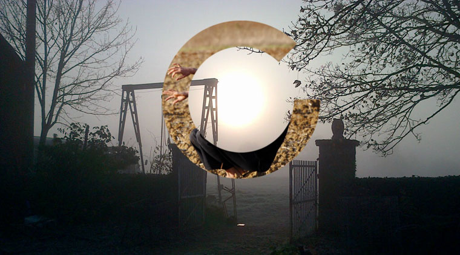
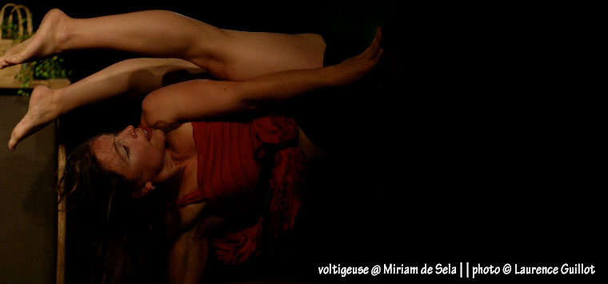
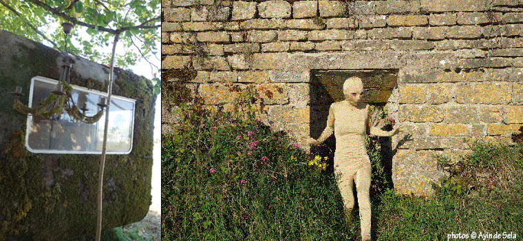
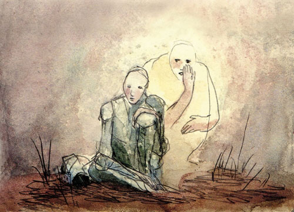
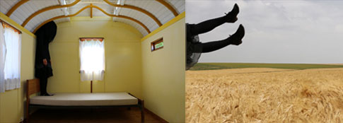
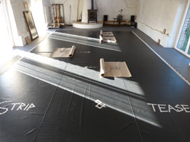
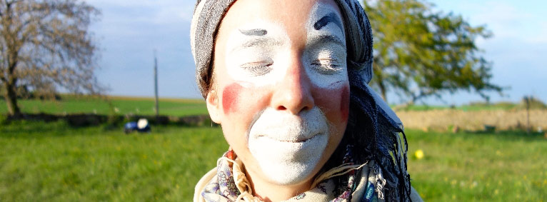
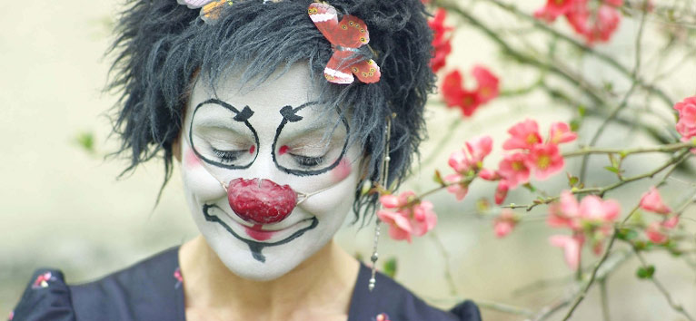
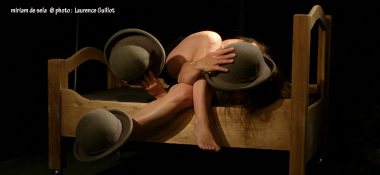

|  |
| retour À L'index |
|
VolontÉ de totalitÉ [ Chez Martin & Sophie, à Avigny (Mailly-la-Ville, 89)
vendredi 31 octobre à 20h Sortie de résidence de Cyril Harsen & Monsieur K ] |
| |
| Faire des pieds et des mains [ stage proposé par Miriam de Sela & Sébastien Apert [12h]
samedi 22 & dimanche 23 novembre 2014, Château de Monthelon
possibilité de financement AFDAS ] |
|  |
| |
|
 |
| Cet Étè au ChÂteau de Monthelon... |
| |
| Short Stories -
Présentation d'un ensemble en résidence à La Cité de la Voix de Vézelay [ Château de Monthelon | mercredi 3 septembre à 20h ] |
| |
| L'atelier du vent -
"L'oiseau Lumière" - 1ère étape de travail [
au Château de Monthelon ¦ ven. 22 août à 18h ] |
 |
Sofie Dubs & Arantza Iglesias
au Château de Monthelon [ jeudi 10 juillet à 18h
"GR10 - Corps Limites" ] |
| |
| Convocation des adhérents /// Assemblée Générale annuelle, suivie d'une Assemblée Générale extraordinaire [ samedi 21 juin à 12h ] |
| |
[ "Un bruissement d'elle" ] Adèll Nodé-Langlois
au Château de Monthelon [ vendredi 13 juin à 18h ]
|
| |
Cie Lunatic - Cécile Mont-Reynaud
au Prieuré Saint-Jean-les-Bonshommes, Sauvigny-le-Bois, 89 [ mardi 10 juin 2014 à 20h ] |
| |
|  |
Elisa Andessner (Autriche),
en résidence du 16 au 26 juin
|
| |
Marion Dieterle (Allemagne),
en résidence du 2 au 13 juin |
 |
| |
Cie Off Road
au Château de Monthelon [ vendredi 23 mai à 18h ¦
"The Intruder" ] |
|
Cie L'Automne Olympique
au Château de Monthelon [ jeudi 15 mai ¦ à 18h
"Mon amour, ma béquille, ma bataille ] |
|
Julian Bellini
"Monotaure", jonglage
[ à la chapelle du Beugnon (Arcy/Cure) mardi 6 mai à 18h30 ] |
| |
mai 2014
• Nettoyage de Printemps : crÉation d'un nouvel espace de travail
• Cie Les Os Bleus, en rÉsidence du 27 avril au 4 mai
• Cie L'Atelier du Vent, "Un Nuage sur la Terre"
• Julian Bellini, "Monotaure" en rÉsidence du 1er au 7 mai
• Cie L'Automne Olympique,"Mon amour, ma bÉquille, ma bataille" en rÉsidence du 10 au 15 mai
• Cie Off Road, "The Intruder" en rÉsidence du 13 avril au 24 mai
|
 |
| [ photo: Leïla Molinet ]"Poisson", Leïla Molinet (France) avec Fanny Defoort et Sky de Sela en résidence du 12 au 18 avril [ au Château de Monthelon ¦ vendredi 18 avril à 18h ] |
|
| Flo & Uri (Autriche / Espagne) en résidence du 7 au 22 avril [ au Château de Monthelon ¦ vendredi 25 avril à 18h ] |
|
Gonzo InSolito
Attention, dernière minute ! [
au Château de Monthelon ¦ vendredi 11 avril (DEMAIN) à 18h ] |
|
| avril 2014... |
|
Nettoyage de printemps !
au Château de Monthelon [ 1, 2 & 3 mai 2014 ] |
 |
[ photo: Adéll Nodé Langlois ] Adèll Nodé-Langlois,
en résidence du 20 mars au 4 avril pour la création de "Un bruissement d'elle", une commande de l'Yonne-en-Scène pour le bus-théâtre |
|
| Ania Buraczynska (Pologne) et Lucas Elias (Argentine), de la compagnie Les Sardines en boîte, en résidence du 2 au 25 mars [ au Château de Monthelon ¦ samedi 22 mars à 16h ] |
| |
| mars 2014 |
|  |
| Au debut de page |